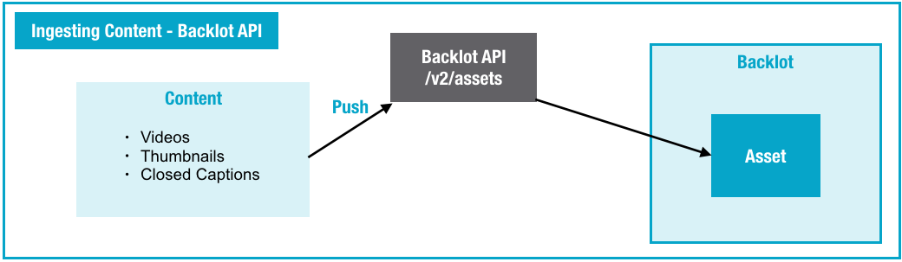

Use the Backlot API to programmatically upload content into Backlot. This approach enables you to integrate your content management system (CMS) or workflows directly with the Backlot platform.
You can use the Backlot API to programmatically upload and manage videos, thumbnails,
and closed caption files.

The Backlot API provides a high level of integration and customization. It requires
development time and resources. If you want to ingest content using the Backlot API, see
The primary call used to upload files (called "assets") is the
/v2/assets route.
Note: Do not add a video with a null
external_id, that is, an external_id with no value
("") or a value of "null". Such null external IDs cannot be
searched for later.